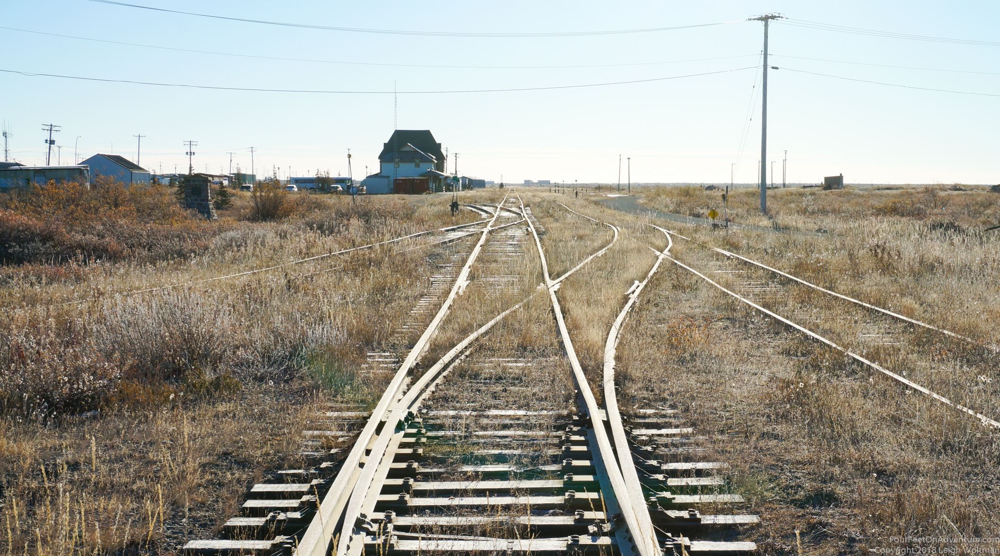
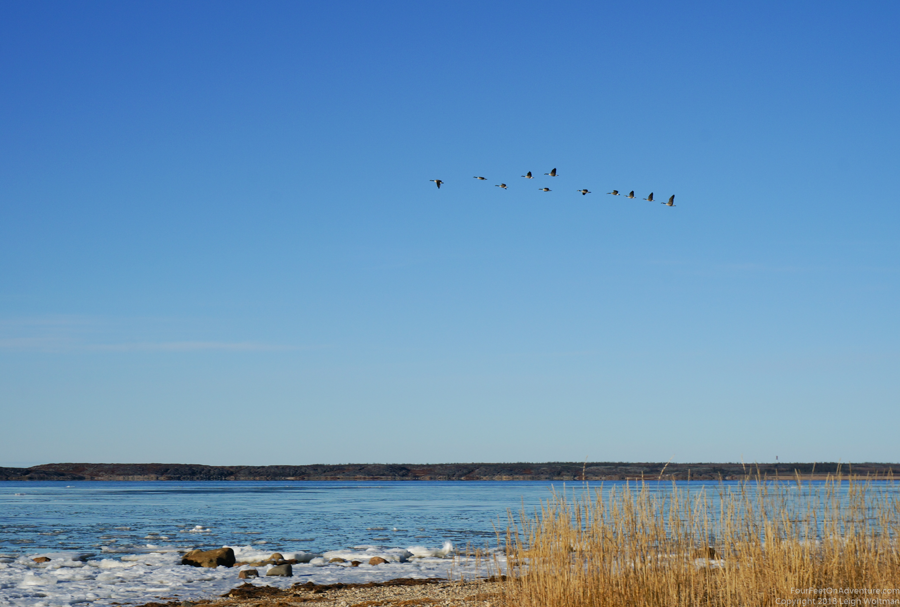
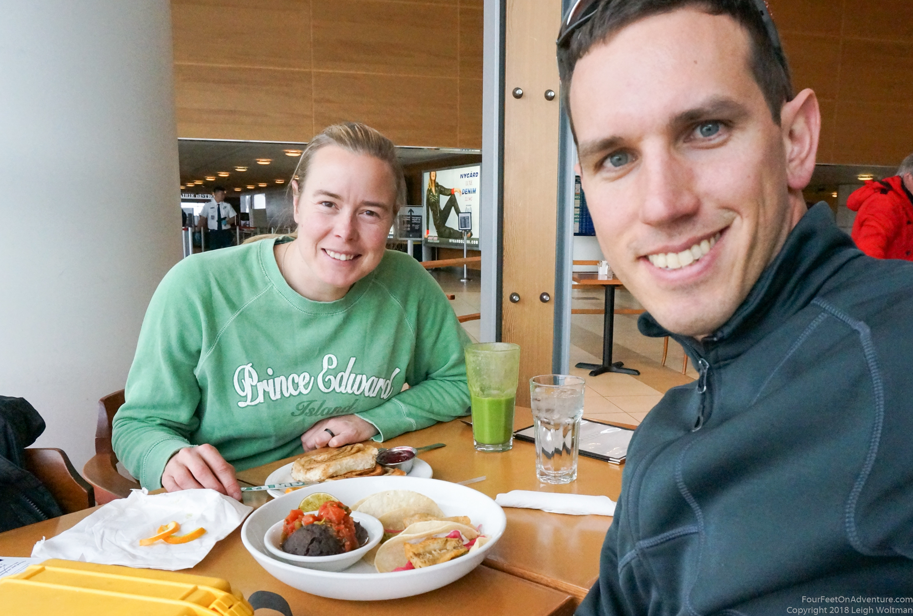
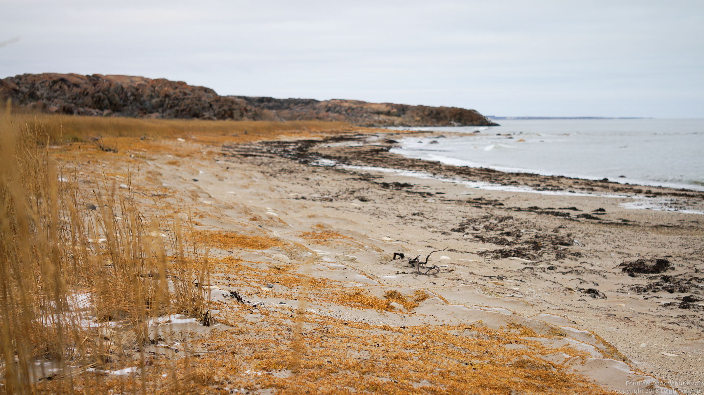
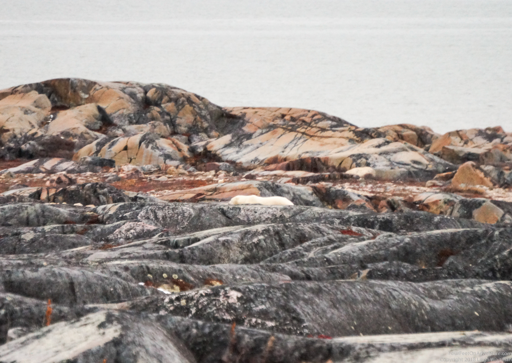
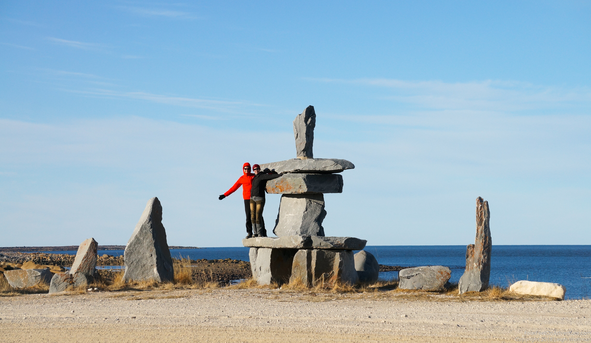
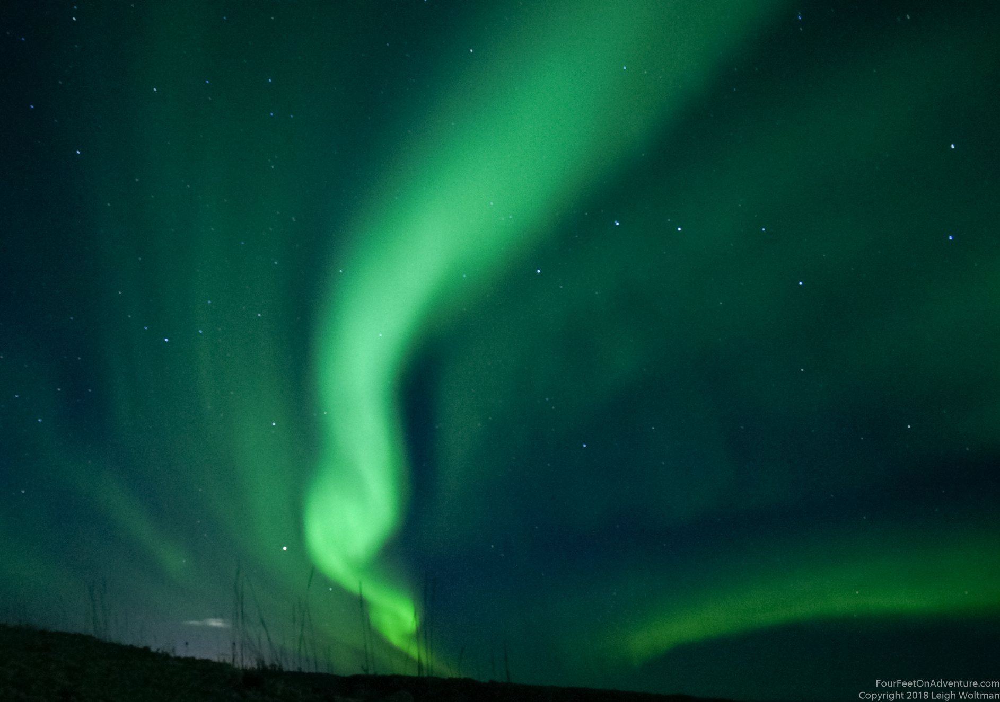
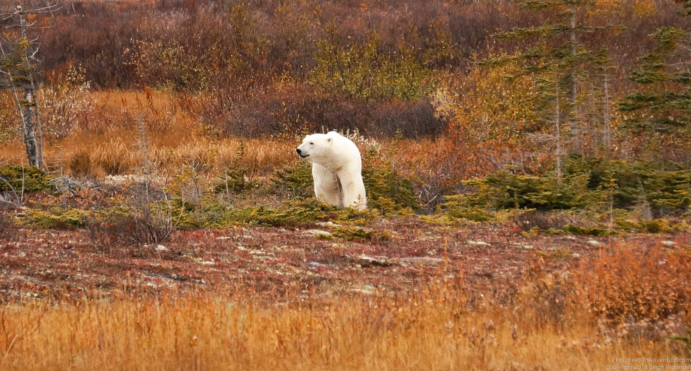
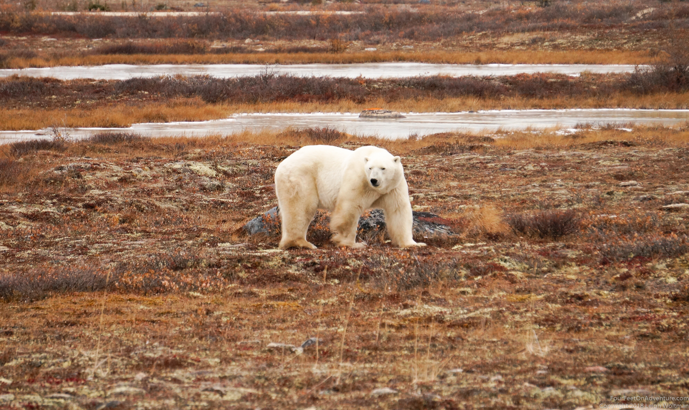

Email Us
Please send us an email, we would love to hear from you!

TThere are places in the world that are on my dream list. I would like to be there, but I’m not sure if it will ever happen. They are not on my immediate must-go-will-fight-for-to-make-it-happen list, but they are lingering in the background of my mind. If I were Aladdin and had a flying carpet I would, but because I don’t, I let them linger. Well, that list got a little shorter, as we managed to do a trip to Churchill!!
Churchill is a Manitoba town, which province also holds the geographical middle of Canada and the most densely inhabited part of it mainly consists of prairie and grain fields and the rest, just like most of Canada, consists of trees. Churchill is quite separate from the rest of the province. Situated on Hudson's Bay, it gives the province an unlikely stretch of saltwater coast. The town flourished when it was used as a harbour to provide an additional route for grain export to Europe in the days that the railways to Montreal were hugely obstructed and the west of the American continent was providing for Europe. The port was fairly successful for a while, especially when an icebreaker helped to make the season a bit longer. A large river pours into the Bay right at town, which might have been why the British build a fort there even longer ago. The French conquered it without a fight; probably everybody was just ready to get out of there before getting trapped in the ice and didn’t see the point of fighting each other. More recently, the railway was broken by a landslide and changed owners. After a few years of hard work, it just reopened in November 2018. In the meantime, the only way there was to fly, no permanent road connects Churchill to the South (see http://wondersofworldengineering.com/hudson_bay.html, and http://www.shippingwondersoftheworld.com/churchill.html)

None of these reasons were why we wanted to be there. Wildlife, that’s why. Churchill is named the polar bear capital of the world. Because of the large river, the water in the Hudson Bay is relatively fresh, causing the ice to form there first in the fall. Polar bears need ice for hunting. So, during the summer when the ice is melted and they have to go on land, they make their way along the coast of the Hudson Bay to Churchill to hang out and wait. Which leads to a situation where you have a large number of polar bears that haven’t eaten in a couple of months, hanging out around a town. Obviously THE place to be!!
Churchill has more to offer than bear watching. Summer is Beluga season, a whale species that can smile, likes to interact, and sheds skin. Belugas leave after summer and migrate to areas in the Hudson Bay that stay ice free in winter. It’s important to have access to air, because Beluga’s, like all whales, need to breathe. So, in summer you have Beluga season, in the fall Polar bear season, and then in winter there is a northern light season. But, in the summer you may already encounter a bear and some northern lights can always occur. So in short, a magical place!!

Now, it happened to be that Leigh was in Canada and Annette in Scotland, and we decided to spend some time together in Winnipeg, which is where Leighs roots are and which happened to be the portal to Churchill. In Leighs conversations with his sister, she brought up that Churchill, Manitoba, at the very opposite end of the province compared to Winnipeg, was only a single-hop fare for airline reward points. And sure enough, he had enough points and October and November is polar bear season in Churchill. It didn't take too much hesitation before we found some flights to book on the way up. Of course, with airline reward points, the actual flights they advertised were somehow unavailable, but there was a flight with a brief stop in a much further north town, Rankin Inlet, Nunavut.
It turns out that early October is fairly early in the season for good polar bear viewing, but we thought we would risk it. The only downside we found, is that everything in town is already marked up for 'high season'. We found accommodations that were looking like they would be private room hostel style with potentially a kitchen available for us to cook in. The classic way to view polar bears on the tundra is to take 'tundra buggy' which is a custom built bus on huge inflatable tires (looking kind of like what was called a monster truck). The cost was eye watering with the cost for a day tour at $500 CDN per person, and there was no guarantee of seeing a bear. We found out that the tours were not fully booked, since it was early season, so we decided to hold off on pre-booking a trip and decide once we got up there.
Our hostel was run by a Chinese immigrant couple. Taylor has an engineering degree in China but wanted to come to Canada and was working for a while as a mechanic in Winnipeg. Now they've moved to Churchill where he is a mechanic on the tundra buggies. They also rent out rooms in their house, and want to start a Chinese food restaurant. They are definitely ambitious.
Our flight was booked through Calm Air, but was being flown by First Air, who flies a Boeing 737 jet. The train track to Churchill has been washed out for more than a year, with much debate about who will be fixing it. Therefore, much of the towns supplies have to be flown in, potentially a reason why this First Air jet was on the route. When we arrive at the airport we were told that our flight was two hours delayed but that we were each being given $30 dinner vouchers. We've never spent sixty dollars at dinner and had already eaten, so we went to Stelas for dinner, twice!
When they finally approved the plane to fly again after its goose strike, we walked out onto the tarmac to see this particular plane was half cargo and half passengers. The front half had a large cargo door and they were loading rolling pallets of goods. A ramp to the back door got us to the passenger compartment which ended prematurely with a bulkhead to divide us from the cargo.

On the flight up to Rankin Inlet, they fed us a whole meal again. Now stuffed, we had to de-plane and wait in the small terminal while they shuffled cargo around. Here, a guy recognized Annette's accent and introduced himself as being born in the Netherlands. Alex now leads photography tours in Churchill. We quickly sensed that this might be a better fit for us compared to a tundra buggy tour.
It was then a quick flight to Churchill, where, maybe you guessed it, they fed us again. This was now over the top.
On our first full day in town, we decided not to do the tour that day, but instead explore the roads in and around Churchill ourselves. We started at the train station, a Parks Canada site, that has a display about polar bears and the area. Then we rented a truck at the local place in town. The first vehicle we tried to get, was sitting on its rim with a flat tire. The second one, also had a low tire, and only a partial tank of gas. They assured us that it would make it for one more day for us. It sounds like those were the only defects of this vehicle, but it was heavily used. Cracked windshield, gear shift being a broken stick of metal, and further this list could go.

We drove out to the Cape Merry, the town side of the channel where the Churchill River ends into Hudson's Bay. The Parks Canada staff were on hand, with two of them standing bear guard with shotguns. The other staff gave us a great explanation of the site, only interrupted when the bear guard spotted a bear on the far side of the river. It was just a speck on the horizon, but I guess this was our first bear sighting. We spent the rest of the day exploring roads around Churchill.
We thought that polar bears would be easy to spot, especially before there is snow on the ground. Well, not really. Because it was so hot for the bears (around +3 degrees during the day), polar bears try to not overheat by lying down and not move. Just every now and then they stand up and wander. And Chruchill has lots of rocks that look like polar bears. The trick is, if you identified such a rock, you take your binoculars and try to see if it has a nose and legs. If not, you’re most likely dealing with a rock. Guides have the advantage that they are in the same area all the time, so they identified most polar-bear rocks, and if there is one in a spot where there wasn’t one yesterday, this could also be a bear. One one of those rocks someone even painted a face, now there is a bit of confusion! In the end, it was a relaxing day, but we didn't see any bears, or at least didn't realize that we saw any.

Churchill and Churchill area are not the place to go for a hike or walk. At all times you stay near the car and NEVER lock the doors of the car, also not when it’s sitting at the house. Although Churchill is patrolled during the day, bears do get in town. If you see one, go hide in the nearest car. Apparently bears either walk by and completely ignore you, or attack. And a polar bear never fakes an attack. After 10 pm you’re suggested to not be outside anymore, there is no more patrolling and they are hard to see. Construction sites in Churchill all have polar bear watches, people who walk around all day with a rifle and keep the workers safe.

That evening, we could see northern lights out the window of our room, so hopped in the truck and drove out of town to a beach. Northern lights stretched over half the sky. We watched as the green bands slowly ripped and morphed over the evening. In the dark we were pretty nervous about opening the car door to setup the camera on a tripod. We hadn't seen any bears all day, what would be the chances now? Fortunately, similar odds, and we enjoyed the evening quietly watching the lights overtop of cloudless sky.

The next day, Alex took us out in his SUV. He carried a gun and we spent the morning exploring similar roads to what we drove the previous day. After a while, Annette and Alex noticed a tundra buggy stopped by an access road, we followed it, and then Annette spotted a bear. We got out of the vehicle and walked in front of the tundra buggy with Alex guarding. So much better to be on the ground, score! The bear wandered by, while we snapped some pictures. We then circled around, and watched it for the better part of the next hour. At this point, it wandered around an outcrop of rock. We thought we lost it, when I spotted it out in the ocean, swimming! We weren't going to catch it again as it was swimming across the bay to the other side. A good time for lunch where we would try to rejoin it later.


After lunch, we did see what possibly could be this bear again, but it wandered into the rocks again and probably went for a nap. In the end, we got to spend enough moments with this bear that we felt like we got to see a polar bear in the wild. We saw 2 other bears, but both of them were napping among the rocks quite far away, making us realize we could have seen bears the day before. Fairly tired, even though we just sat all day, we cooked up dinner and relaxed for the evening.
The next day was our final day in Churchill and our plane would depart late in the evening. We decided to explore the town, making a stop in one of the restaurants for a warm drink and also walking along the train tracks of the fabled train that will soon return to Churchill. Our journey to Churchill felt fulfilled, we had some great weather, saw some northern lights and was able to see a wild polar bear up close. Maybe next time we try to time a trip in the summer around the beluga whales.
Please send us an email, we would love to hear from you!